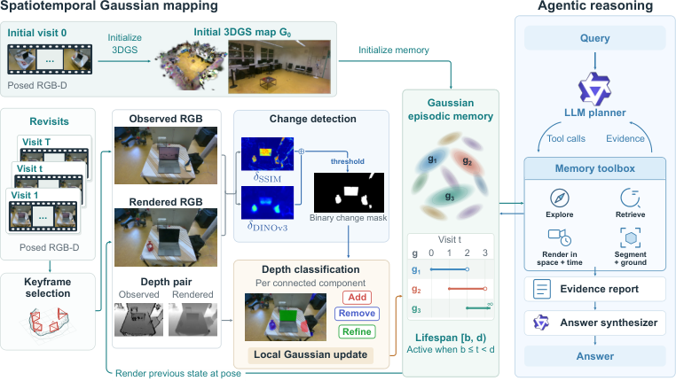

Paper Analysis
01 · Episodic Memory Is More Than the Latest Map
半静态环境指每次访问时可近似静止，但两次访问之间物体可能被移动、移走或改变状态。GEMS 的时间单位是离散 revisit，不是连续运动物体的每帧形变；它不以恢复动态轨迹或实时单目位姿为主要任务。
普通地图更新会覆盖旧状态，于是无法回答“之前在哪里”。每次保存完整地图虽可回溯，却重复存储大量未变化区域。GEMS 的思路是共享静态高斯，只有发生变化时才保留新的局部版本。
每次输入包含 RGB、深度、内参和公共世界坐标系中的位姿。初始场景通过 gsplat 优化得到 3DGS 地图。这比 LingBot-Map 的 RGB 流式前馈输入更强：迁移时必须额外解决预测深度、跨访问坐标对齐以及地图优化，不能直接宣称是原架构的即插即用模块。
Paper Analysis
02 · Following the Mapping Side of Figure 2

Ling-Chia Chen, Abdelrhman Werby, Kaan Aytekin, and Kai O. Arras · CC BY 4.0 · Original figure, unmodified · Paper & Caption ↗
图 2 左上用第一次访问初始化地图。后续访问选择位姿足够分散的关键帧，在当前相机位姿下渲染旧地图的 RGB 和深度，再与新观测比较。固定相机视角的目的，是尽量把视角变化从场景变化中分离出来；位姿误差仍会形成伪变化。
Change detection 同时使用图像 SSIM 与 DINOv3 特征余弦相似度。两者截断到 [0,1]，按 0.3 与 0.7 加权后取补数得到变化分数，阈值化形成二值 mask。DINOv3 是视觉表征，不是语言查询 embedding；本文称其为 semantic term，并不意味着它给出了对象实例身份。
随后用旧渲染深度减去新深度，再除以新深度。若旧地图更远而新观察更近，支持前方出现新几何；若旧地图更近而新观察更远，则支持原来的前景消失。每个连通域统计正负变化比例，触发 Add、Remove 或 Refine。
同一连通域可以同时触发 Add 和 Remove，例如物体搬动同时露出旧背景并占据新位置。Refine 则处理没有显著深度前后关系的外观变化或局部重建误差，不应把所有差异都理解为新增物体。
c(u) = 1 − [0.3 SSIM(I_old_render, I_new)(u)
+ 0.7 cosine(f_DINO_old(u), f_DINO_new(u))]
M(u) = 1[c(u) > tau_s]
delta_D(u) = [D_old_render(u) − D_new(u)] / D_new(u)
Positive delta_D: support for added foreground.
Negative delta_D: support for removed foreground.Paper Analysis
03 · Local Optimization and Versioned Gaussians
Add 区域把新深度反投影成三维位置，初始化新高斯。Remove 选中 mask 内位于新观测深度之前的旧高斯，从当前状态移除，并为新暴露区域补充高斯。Refine 则选取 mask 内位于新旧深度最大值之前的高斯进行优化。
只有新增与待细化的高斯更新，其他静态高斯冻结参数，但仍参与渲染。这一点很重要：冻结并不等于从渲染中移除，它们依然贡献颜色、遮挡和合成权重，让局部优化在原场景上下文中进行。
初始地图沿用 GaME 的光度与几何损失，并对过度各向异性的尺度加入归一化阈值惩罚。局部更新仍用光度与几何项，但移除尺度正则，每个关键帧只优化 100 次。论文没有把 DINO 特征拟合为一个新增的可微语义重建 loss；语义特征在这里主要决定哪些区域进入优化。
每个高斯版本携带出生 b_g 和结束 d_g，时间 t 的地图取满足 b_g≤t<d_g 的版本。细化时关闭旧版本并追加优化后的副本，不能原地覆盖旧参数，否则过去的场景就会被改写。Remove 也只是让旧高斯从当前时间切片消失，历史记录仍存在。
教学例子：某局部在访问 0 建立，访问 2 改变，则旧版本有效期为 [0,2)，新版本为 [2,∞)。访问 1 的渲染仍选择旧版本，访问 2 选择新版本。高斯版本不是物体 ID；物体跨访问关联由后续工具处理。
存储因此随累积变化增长，而不是严格固定容量。所有区域频繁改变时仍可能快速膨胀，关键帧位姿和查询索引也有开销。“只存变化”不能推导为无限长运行下总内存恒定。
G_t = {g in G_history : b_g <= t < d_g}
Refine at visit t:
close old version: d_old = t
append optimized copy: b_new = t, d_new = infinity
Frozen static Gaussians still participate in rendering.Paper Analysis
04 · Semantic Queries Inspect the Map After Construction
图 2 右侧的 LLM planner 使用检索、渲染和分割工具搜集证据，再由 answer synthesizer 输出答案、理由和置信度。它不是用最终问答 loss 端到端训练高斯；建图优化和查询推理是两个阶段。
为加速搜索，系统从历史关键帧位姿重渲染 RGB，并缓存 OWLv2 特征；关键帧位姿经层次聚类形成区域。search 先定位候选区域，time_view 将同一虚拟相机放在不同访问的地图上，方便控制视角后比较状态；relook 调整视点以澄清歧义。
locate 在查询时用 SAM3 分割目标，将 mask 结合渲染深度提升到三维；obj_view、compare、track 继续检查局部实例。语义粒度因此可以随问题变化，不必只查询建图时预定义的对象节点。但可重渲染的内容仍受实际重建覆盖限制，不能看见从未被观测和恢复的真实细节。
执行状态机约束检索与细查工具的使用顺序，conclude 在轮次结束时清除原始视觉上下文以控制 token，最后 report 汇总证据。这是外部显式记忆与工具调用，不是 Transformer 内部的固定几个历史 token。
还应区分两种“换视角”：GEMS 从已有地图渲染虚拟相机；MemAct 会执行动作取得新观察。前者重排已保存的信息，后者可能带来新证据。渲染视角更清楚并不保证内容无伪影。
Paper Analysis
05 · Reconstruction Quality Trades Off Against Update Cost
重建评估每十帧留出一帧，两个数据集每场景仅做一次时间更新。GaME-Aria 有两个室内场景；CL-Splats Real-World 有五个场景且没有真值深度，作者用 Depth Anything 3 生成深度供 GEMS 与 GaME 使用。因此后者 Depth L1 不能当作传感器真值下的几何精度。
在 GaME-Aria 上，GEMS 更新耗时 1.12 分钟，低于 GaME 的 29.40 分钟，但 PSNR 从 31.12 降到 29.23，深度 L1 从 1.15 cm 增到 2.28 cm。O-SCD 的 PSNR 为 32.32，更新 2.79 分钟，但它只用 RGB，不输出可比较的深度。
在 CL-Splats 上，GEMS 的 PSNR/深度 L1/耗时为 27.87 dB、9.38 cm、1.67 分钟；GaME 为 24.25、10.79、29.81。可以说局部更新降低时间，并在该设置中改善相对 GaME 的质量，不能概括为在所有数据上同时更快、更准确。
三维 grounding 采用 Nr3D、与 BBQ 一致的场景和协议，IoU 阈值只有 0.10。GEMS 总体 58.9%，KeySG 49.8%；但没有直接提及目标的查询上 GEMS 23.4%，低于 KeySG 25.4%。该结果是宽松阈值的定位表现，不是精细实例分割质量。
| GaME-Aria Method | PSNR (dB) ↑ | Depth L1 (cm) ↓ | Update Time (min) ↓ |
|---|---|---|---|
| O-SCD | 32.32 | Not reported | 2.79 |
| GaME | 31.12 | 1.15 | 29.40 |
| GEMS | 29.23 | 2.28 | 1.12 |
Paper Analysis
06 · What the Question-Answering Evidence Supports
GEMS-Bench 包含三个真实环境、十二个模拟环境，共 473 个问题。真实部分四次访问、244 问，模拟部分至少三次访问、229 问。问题涵盖数量、位置与出现消失、状态变化、静态事实和错误前提；它是小规模多访问基准，不是大规模开放世界长期部署。
各方法使用 Qwen3.5 作为底层 LLM，GPT-5.6-Luna 按 1–5 分评判答案，再线性缩放。表里的 60.9 或 71.0 是平均评判得分的百分制表达，不是严格 exact-match 正确率，也不等于这么多比例的问题完全答对。
真实数据上 GEMS 60.9，高于 STaR 44.8，却低于使用同一推理流程、保留全部 posed RGB-D 的 GEMS-all-images 63.2。模拟数据上 GEMS 71.0，高于 all-images 63.8。真实深度和位姿误差会使偏离采集轨迹的渲染产生伪影，原图保留因而仍有价值。
论文正文把 STaR 称为两种 split 的最强基线，但表中模拟 DAAAM 为 38.0，高于 STaR 35.5；比较应以表格的具体设置和数字为准。同样，不能忽略 all-images 在真实数据上的优势。
NVS 消融只选择完整系统实际调用 time_view 或 relook 的 245 个问题。保持同一地图和推理预算，关闭两工具后均分从 65.1 到 58.5，即该选择子集提升 6.6 点。它不是全基准的平均提升，也不能区分固定视角跨时间比较与空间视角细化各自贡献。
存储实验只展示一个真实和一个模拟场景。真实场景四次访问后，GEMS fp32/fp16 为 1.95/0.98 GiB，关键帧为 2.73 GiB，全部帧为 3.94 GiB。节约依赖局部变化和数值精度，仍应单独统计查询缓存与计算开销。
| Memory | Real-world Score ↑ | Synthetic Score ↑ |
|---|---|---|
| STaR | 44.8 | 35.5 |
| DAAAM | 27.1 | 38.0 |
| All posed images + same agent | 63.2 | 63.8 |
| GEMS | 60.9 | 71.0 |
Paper Analysis
07 · Implications for LingBot-Map
最贴近我们方向的作用链是：视觉语义差异改变变化 mask，mask 改变哪些高斯更新，从而影响当前几何和保留的历史。这是一条明确的决策路径，但本文没有给出仅移除 DINO、保持其他条件不变的几何消融，尚不能隔离语义特征的独立收益。
若接到 LingBot-Map，可以先把预测深度和位姿用于高斯地图初始化，再研究几何一致性与语义差异共同决定局部更新。这属于增加显式地图优化后端，会改变原来的纯前馈流程；需要报告端到端延迟，并防止深度/位姿误差被误判为环境变化。
若主线仍是语义写入前融合，GEMS 的启发是保存历史版本及原证据的必要性，而不是直接照搬高斯生命周期到六个 KV token。应分别评估语义是否改善重建、是否帮助识别变化、是否让历史查询更可靠，三个结果不能互相替代。
本次读 v1，首次公开于 10 月 23 日。官方仓库目前只有 README，说明代码与数据待发布；以上实现路径来自论文，未声称已复现或核查到可运行代码。
Discussion
Reading Questions
Are semantic embeddings stored in every Gaussian?
本文主要保存高斯外观/几何和时间版本；DINOv3 用于变化检测，OWLv2 用于视图索引，SAM3 在查询时分割。不能把这些不同用途合并为每高斯都有语言向量。
Why duplicate a refined Gaussian?
旧参数对应过去的场景，直接覆盖会破坏历史。关闭旧生存区间、追加新副本才能按时间恢复。
Does novel-view rendering acquire new evidence?
它提供已有重建的另一种观察方式，但不会创造真实的新观测。缺失覆盖和几何错误仍会限制可靠性。
Has semantics alone improved geometry?
尚未隔离证明。语义特征参与更新选择，但需要去掉语义项的匹配消融才能估计其独立几何贡献。
References
- Original Paper ↗
- Official Project ↗
- Official Release Status ↗
- Related Note: RecallGS ↗
- Related Note: MemAct ↗
One original method figure is included for scholarly analysis under CC BY 4.0. Paper results are author-reported; no local reproduction has been performed. First-submission dates and reading versions are recorded separately.
Verified on 2026-11-03. Paper results refer to the linked versions. Repository references were checked on this date.